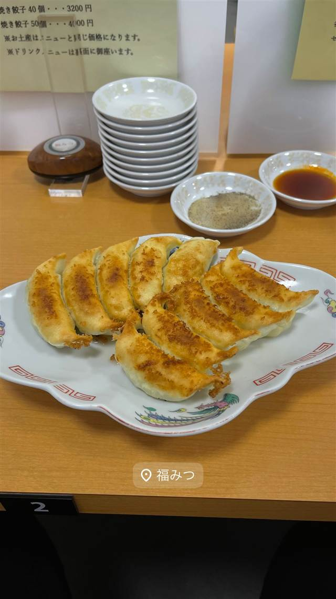

町中華 · 餃子専門 · 幡ヶ谷
您好（ニイハオ）
ひき肉でなく粗く刻んだ肉を使う、連続ビブグルマンの餃子
您好
1982年開業、幡ヶ谷の商店街で40年以上愛される餃子専門店。皮から具、タレまですべて手作りし、粗く刻んだ肉を使う独特の餃子でミシュランのビブグルマンにも選ばれている。
TRIVIA
豆知識
- ひき肉ではなく肉を粗く刻んで使うため独特の食感になる
- 2016年から食べログ・ミシュランで連続して評価を受け続けている
REVIEWS
世間の評判
3.67食べログ
厚みともちもちの本格中華餃子
- 皮に厚みがありもちもちとした本物の中華餃子だと評価する声が多い
- 焼き餃子好きから本場の味に近いと評価されているという声がある
- 小さな店で満席になりやすく入店できるかは運次第という声もある
食べログ 口コミ1090件
| 創業 | 1982年創業 |
|---|---|
| 系譜 | 東京大飯店やマダムチャンなどで点心を学んだ店主が独立して開業した。 |
| 看板 | 焼き餃子・揚げ餃子 |
| こだわり | 餃子は皮・具・タレまですべて手作りで、ひき肉ではなく粗く刻んだ肉を使うことで他店と違う食感を出している。 |
| 掲載・評価 | ミシュランガイドで2016年から連続してビブグルマンに選出。食べログ「餃子 百名店」2019選出。 |
| どこから | 23区の外れ・近郊 |
| 行くなら | 予約必須 |
| 予算 | 昼 ¥2,000～¥2,999 夜 ¥2,000～¥2,999 |
| 定休日 | 月曜・日曜 |
| 予約 | 予約可 |
| 場所 | 幡ヶ谷 東京都渋谷区西原2-27-4 |
| メモ | 幡ヶ谷駅南口から徒歩3分、商店街ビル2階。予約がほぼ必須の人気店。 |
食べたもの：焼き餃子
NEARBY
近い店・同じ系統の店
-
 餃子専門 亀戸駅
亀戸餃子 本店
座ると自動で2皿確定、1955年創業の下町餃子専門店
昼 ～¥999 夜 ～¥999
餃子専門 亀戸駅
亀戸餃子 本店
座ると自動で2皿確定、1955年創業の下町餃子専門店
昼 ～¥999 夜 ～¥999
-
 餃子専門 乃木坂
赤坂珉珉（みんみん）
酢コショウで食べる元祖、渋谷の名店直系ののれん分け店
夜 ¥4,000～¥4,999
餃子専門 乃木坂
赤坂珉珉（みんみん）
酢コショウで食べる元祖、渋谷の名店直系ののれん分け店
夜 ¥4,000～¥4,999
-
 餃子専門 銀座一丁目
銀座天龍 本店
ニンニクを使わず白菜と豚肉だけで作る12cmの大判餃子を創業以来守る
昼 ¥1,000～¥1,999 夜 ¥3,000～¥3,999
餃子専門 銀座一丁目
銀座天龍 本店
ニンニクを使わず白菜と豚肉だけで作る12cmの大判餃子を創業以来守る
昼 ¥1,000～¥1,999 夜 ¥3,000～¥3,999
-
 餃子専門 飯田橋駅
餃子の店 おけ以
東京に焼き餃子を広めた老舗、羽根つき餃子は1日1300個
昼 ¥1,000～¥1,999 夜 ¥1,000～¥1,999
餃子専門 飯田橋駅
餃子の店 おけ以
東京に焼き餃子を広めた老舗、羽根つき餃子は1日1300個
昼 ¥1,000～¥1,999 夜 ¥1,000～¥1,999
-
 餃子専門 恵比寿駅
えびすの安兵衛
高知の屋台仕込み、にんにくの効いたジューシーな餃子
夜 ¥1,000～¥1,999
餃子専門 恵比寿駅
えびすの安兵衛
高知の屋台仕込み、にんにくの効いたジューシーな餃子
夜 ¥1,000～¥1,999
-

餃子専門 浜松駅 福みつ ごま油とサラダ油を黄金比で使う、香ばしい厚皮の浜松餃子 昼 ¥1,000～¥1,999 夜 ¥1,000～¥1,999